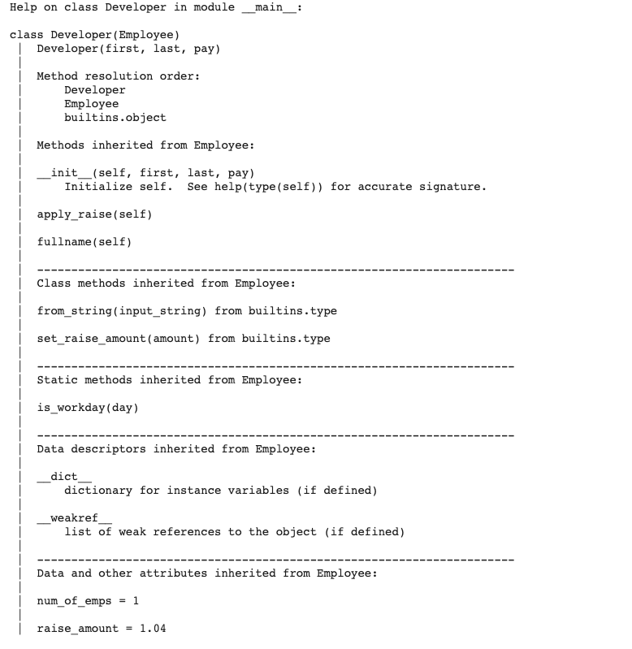

In this blog, we will be addressing the concepts of python class inheritance
Inheritance
Inheritance allows us to inherit attribute and methods from a parent class. We can create as many subclasses as we want and we can override them with our use cases and it will not affect the parent class at all.
Let us demystify the concepts using our example class Employee. As we know we have a parent class, now think of a scenario where within an organisation there will be multiple employees( affiliated to different job roles), examples, developers and managers. These are good candidates for subclasses because they possess all the class attributes and the instance attribute that we defined in the parent class. So the inheritance is a concept where we don’t have to copy and paste all the codes necessary for the subclass we can just simply inherit.
While creating a subclass, followed by the class name definition within the parentheses we have to define which is the parent class it will inherit from.
There is something called help function and if we put the class details in that it will return the all necessary details about that class.
Let us look into how to customise our subclasses.
Assume that we have to improve the raise in the Developers. If you now call the apply raise function it will use the common raise amount of 4% ( 1.04 ) and if you want to set that to say 10 percent only thing that you have to do is modify the value in the subclass.
Assume that we have to modify the functions too, for example in the init function itself for Developer class we need to provide the programming language too what we will do then?
Just recreate the init method and those things are in the parent class can be added by either calling the super function or accessing the parent class and passing the attributes and then define the instance variables unique to the subclass and handle them
Some interesting note is that you can pass the list of the subcalss instances as arguments to another for example
If you create another subclass as manager and the attribute to the subclass could be the list of Developer instances { while passing the instances as arguments we never pass the mutable data types like list or dict as difault arguments we assign it to None) and we can run the function in them too
Some more interesting facts are there are two inbuild functions in isinstance() will tell us the an instance is related to the class of the a class
issubclass( ) will check the class is a subclass of another
The real world example of subclasses are in the Exceptions class.